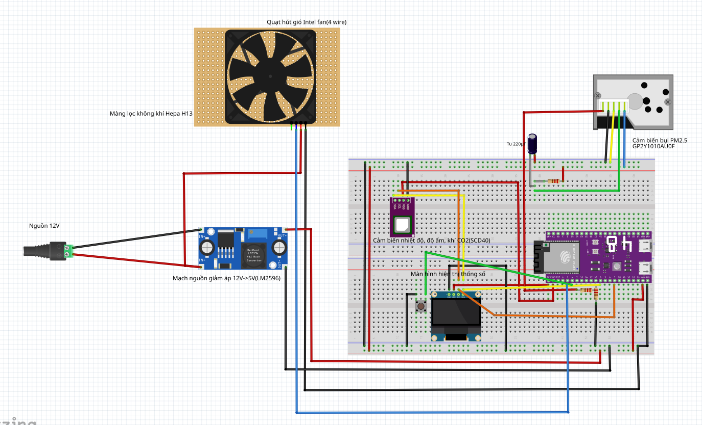

Thiết bị
ESP32-S3
Đọc cảm biến và hiển thị OLED.
Nhận lệnh PWM, gửi trạng thái quạt và thời gian chạy bộ lọc.
C++ · FreeRTOS · PlatformIO
Báo cáo cuối kỳ · IoT
Thiết kế phần cứng, lập trình firmware đa tác vụ, xử lý dữ liệu MQTT và triển khai vòng điều khiển quạt lọc.
MQTT trao đổi với node; REST API kết nối dashboard với backend.
Đọc cảm biến và hiển thị OLED.
Nhận lệnh PWM, gửi trạng thái quạt và thời gian chạy bộ lọc.
MqttLink nhận bản tin. TelemetryService kiểm tra và lưu số đo.
ThresholdService tính ngưỡng. ControlLoop gửi lệnh và ghi lý do điều khiển.
Ghép nối, danh sách máy, chi tiết phòng, cài đặt và hướng dẫn.
TanStack Query cập nhật số đo và trạng thái thiết bị mỗi 5 giây.
set_actuator qua MQTT; node
áp mức PWM và gửi lại trạng thái thực thi. Dữ liệu và nhật ký được lưu
trong PostgreSQL.
ESP32-S3-DevKitC-1 N16R8 · 16 MB Flash · 8 MB PSRAM · nguồn 12 V và LM2596.

SCD40 và OLED dùng chung I²C 400 kHz trên GPIO 8/9.
Nguồn 12 V cấp liên tục cho quạt. Chân điều tốc nhận PWM 25 kHz; LM2596 hạ áp xuống 5 V.
Cấu hình hiện tại dùng GP2Y1023, đọc PWM qua GPIO 18 và cầu chia áp 1 kΩ / 2 kΩ.
Sơ đồ còn nhãn GP2Y1010AU0F; nhãn và đấu nối cảm biến bụi cần đồng bộ với cấu hình GP2Y1023 của dự án.
Hai đường thu thập độc lập cập nhật cấu trúc SensorData_t dùng chung.
CHANGE trên GPIO 18 ghi thời điểm cạnh xuống và
cạnh lên bằng esp_timer_get_time().
W₀ mặc định 1400 µs; có thể hiệu chỉnh và lưu NVS.
Sau 5 lỗi giao tiếp liên tiếp, khởi động lại chu kỳ đo.
Mã nguồn: embedded/src/dust_sensor.cpp · scd40_sensor.cpp
Năm task được ghim vào hai lõi bằng xTaskCreatePinnedToCore().
| Task | Core | Stack truyền vào API | Ưu tiên | Chức năng |
|---|---|---|---|---|
mqtt |
0 | 8192 | 2 | Wi-Fi, MQTT, NTP, gửi telemetry và xử lý lệnh |
scd40 |
1 | 4096 | 2 | Đọc CO₂, nhiệt độ và độ ẩm |
dust |
1 | 3072 | 3 | Tổng hợp xung PWM thành nồng độ bụi |
fan |
1 | 3072 | 3 | Áp PWM, đọc nút nhấn, đếm giờ quạt |
oled |
1 | 4096 | 1 | Cập nhật màn hình SSD1306 |
dataLock()/dataUnlock() bảo vệ số đo và lệnh quạt.
dataSnapshot() sao chép trạng thái rồi nhả khóa trước
khi serialize hoặc hiển thị.
I²C được khởi tạo một lần trong setup(). Mỗi task
đăng ký và nạp lại watchdog; thời gian timeout cấu hình là 30
giây.
Mã nguồn: embedded/src/main.cpp · sensor_data.cpp · include/system_utils.h
Firmware dùng ArduinoMqttClient; backend dùng một kết nối Paho trong MqttLink.
| Topic: aqss/devices/{id}/… | Chiều truyền | Dữ liệu / hành vi |
|---|---|---|
telemetry |
Node → Backend | 5 giây/lần · sensors, system, timestamp · QoS 1 |
status |
Node → Backend | Retained ONLINE; LWT retained OFFLINE · QoS 1 |
actuator/state |
Node → Backend | state, level, duty_pct, mode, filter_runtime_h · QoS 1 |
command |
Backend → Node | Envelope command + params · QoS 1 |
{
"command": "set_actuator",
"params": {"state": "ON", "level": 3,
"mode": "AUTO"}
}TLS cổng 8883 với CA gốc; keepalive 30 giây. Thử kết nối MQTT lại sau mỗi 5 giây.
ArduinoJson serialize vào bộ đệm 512 B. Timestamp Unix được đồng bộ NTP; telemetry chờ đến khi thời gian hợp lệ.
Mã nguồn: embedded/src/mqtt_network.cpp · backend/…/mqtt/MqttLink.java
MqttLink chuyển JSON thành Spring event; dịch vụ nghiệp vụ xử lý qua @EventListener.
ControlLoop.onReading(device) để đánh giá kích
hoạt ngay.
| Bảng | Vai trò |
|---|---|
spaces |
Hồ sơ và ngưỡng phòng |
devices |
Liên kết phòng, trạng thái quạt |
telemetry |
Chuỗi số đo theo thiết bị |
audit_log |
Sự kiện và quyết định điều khiển |
Mã nguồn: backend/…/TelemetryService.java · MqttLink.java · resources/db/migration/V1–V4
Công thức đang triển khai trong ThresholdService; xem trước và áp dụng qua SpaceService.
| Thành phần | Cách tính hiện tại |
|---|---|
| h · giờ/ngày | Suy ra từ loại phòng: phòng ngủ 8 h, lớp học 6 h, phòng khách 4 h, bếp 2 h. |
| f(V) | ∛(V / 20), giới hạn trong [0,7; 1,6]. Thiếu thể tích: hệ số 1. |
| f(thông gió) | Thấp 0,75 · trung bình 1,0 · cao 1,35. |
| f(CO₂) | Giảm từ 1,0 đến 0,75 trong khoảng 420–1220 ppm. Chưa có CO₂: hệ số 1. |
Preview dùng hồ sơ phòng và CO₂ mới nhất để trả về ngưỡng cùng
các hệ số. POST lưu kết quả với
threshold_source: profile.
Cài đặt có các mức 25 / 35 / 50 µg/m³. Khi lưu, nguồn ngưỡng
được đánh dấu manual.
Ngưỡng được tính khi tạo phòng hoặc khi người dùng áp dụng kết quả preview. Vòng điều khiển dùng giá trị đã lưu.
Vòng điều khiển áp dụng cho thiết bị đã ghép phòng, ở chế độ AUTO và có số đo còn hiệu lực.
| Điều kiện | Thao tác | Lý do ghi nhận |
|---|---|---|
| Quạt tắt và PM2.5 ≥ ngưỡng phòng | Bật mức 3 · duty 90% | threshold_breach |
| Quạt đã chạy ≥ 120 phút | Tắt quạt | max_on |
| PM2.5 < 70% ngưỡng và đã chạy ≥ 5 phút | Tắt quạt | hysteresis_off |
Telemetry mới gọi onReading(). Nếu quạt đang tắt và
bụi vượt ngưỡng, backend đánh giá ngay.
Timer 60 giây kiểm tra điều kiện tắt và gia hạn lệnh mỗi 5 phút khi quạt AUTO đang chạy.
Bỏ qua số đo cũ hơn 5 phút. Node tắt quạt AUTO nếu không nhận lệnh trong 10 phút.
LEDC trên GPIO 5 phát PWM 25 kHz, độ phân giải 8 bit; quạt nhận nguồn 12 V liên tục.
| Level | Duty danh định | Giá trị LEDC |
|---|---|---|
| 0 | 0% | 0 |
| 1 | 35% | 89 / 255 |
| 2 | 60% | 153 / 255 |
| 3 | 90% | 230 / 255 |
Nhận FanCommand_t qua snapshot
↓
Chuẩn hóa mức 0…3 và trạng thái ON
↓
OFF → ON: kickstart 100% trong 250 ms
↓
Áp duty; cập nhật trạng thái dùng chungNhấn ngắn chuyển OFF → 1 → 2 → 3 ở MANUAL. Giữ nút chuyển về AUTO.
Task chu kỳ 50 ms tích lũy runtime khi quạt chạy; lưu NVS mỗi 5 phút.
Node gửi mức, duty và runtime_h về backend; dashboard đọc trạng thái đã cập nhật.
Mã nguồn: embedded/src/fan_control.cpp · sensor_data.cpp · mqtt_network.cpp
Liên kết phòng được quản lý ở backend; node lưu bản sao phục vụ OLED và vận hành sau khởi động.
| Sự kiện | Backend | Node |
|---|---|---|
| Telemetry từ node mới | Tạo device chưa ghép; lưu pairing_code | Hiển thị mã 6 ký tự trên OLED |
POST /devices/pair |
Gắn phòng; đặt paired_at; gửi set_space | Lưu space_id và paired trong NVS |
POST /devices/{id}/unpair |
Xóa liên kết; gửi set_space rỗng | Xóa phòng trong NVS; hiện mã ghép lại |
RAM giữ 60 bản ghi có timestamp gốc, tương đương 5 phút ở chu kỳ 5 giây. Đầy bộ đệm thì ghi đè mẫu cũ nhất.
flushOffline() gửi mẫu đầu hàng đợi; chỉ bỏ mẫu khi
publish thành công. Dữ liệu RAM mất khi khởi động lại.
Backend gửi lại lệnh mỗi 5 phút khi đang chạy. Quá 10 phút không có lệnh, firmware chuyển quạt OFF.
Mã nguồn: backend/…/DeviceService.java · embedded/src/config_store.cpp · mqtt_network.cpp
TanStack Query quản lý cache và polling; các thao tác thay đổi thiết bị dùng mutation.
useDevices/useLatest: 5 giây.
useHistory/useSpaces: 60 giây. Các query theo thiết
bị chỉ chạy khi có deviceId.
useFanCommand POST đến
/devices/{id}/command. Khi thành công, invalidate
dữ liệu thiết bị, mẫu mới nhất và lịch sử.
API nhận from/to, mặc định 24 giờ; backend giảm mẫu khi chuỗi dài. HistoryChart ánh xạ thời gian và PM2.5 thành đường SVG, có đường ngưỡng và tooltip.
Latest trả 404 khi node chưa có mẫu; query không retry. UI phân biệt null, dữ liệu cũ và thiết bị mất kết nối.
Mã nguồn: frontend/src/hooks/useAqss.ts · api/client.ts · components/HistoryChart.tsx
Báo cáo cuối kỳ · IoT